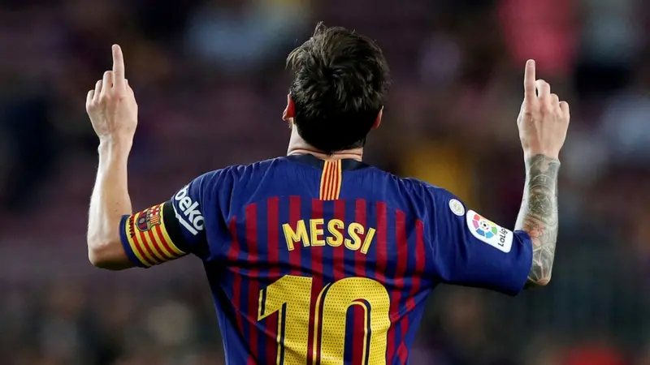
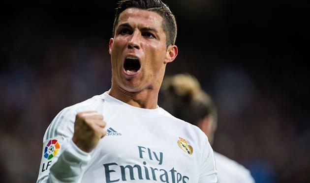
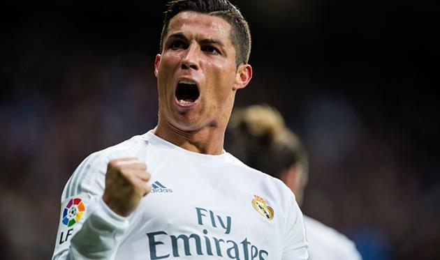
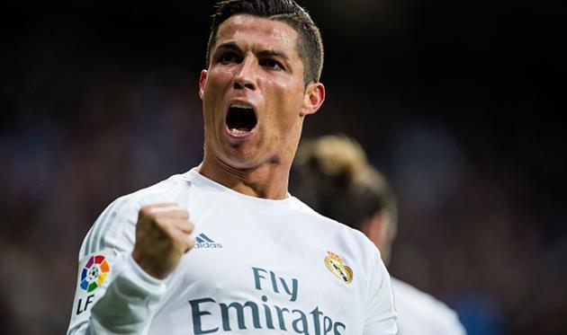
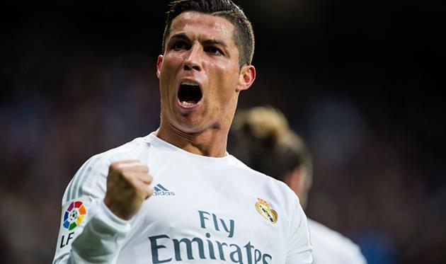

Футбольна галерея

 


Футбол — це не просто гра, це частина мого життя!
Перейти до галереїФутбол для мене — це свобода, емоції та командний дух. Я обожнюю дивитися матчі, підтримувати улюблених футболістів і грати з друзями на полі.
Серед моїх кумирів — Ліонель Мессі, Кріштіану Роналду, Андрій Шевченко. Вони надихають мене працювати над собою та ніколи не здаватися.
